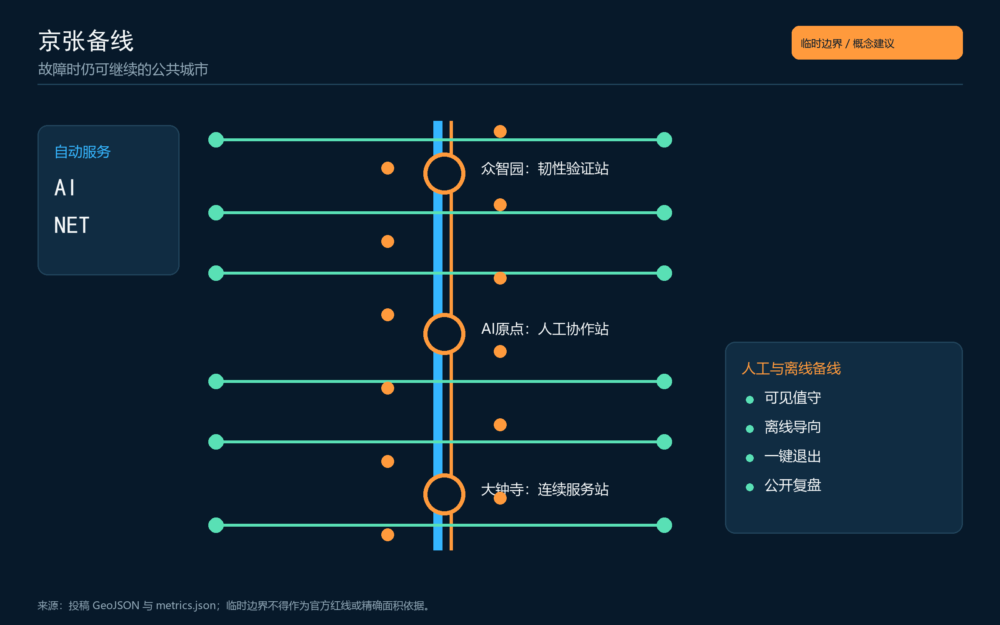
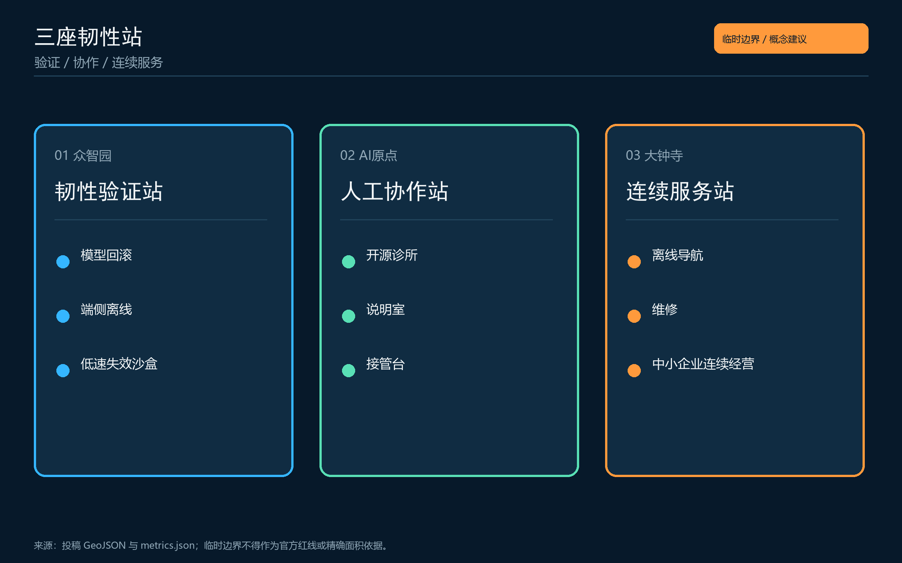
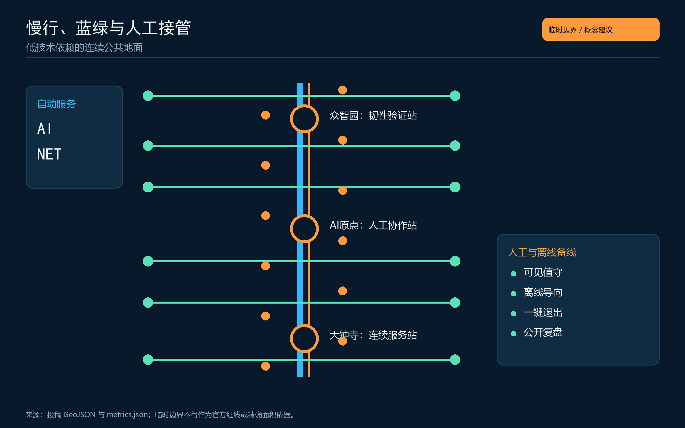
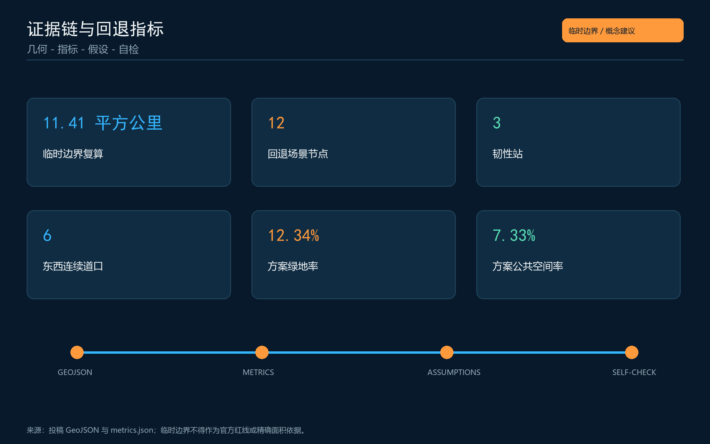

总览地图

故障时仍可继续的公共城市
六项结构化指标与 metrics.json 同源。
十二个公共接管场景在图件与 GeoJSON 中交叉登记。
以 self_check.json 的最终结果为准。




PASS - 空间拓扑 / 视觉包装 / 专业证据链
公告1.3-1.5与agent.1-agent.6均在矩阵中映射。
全部空间建议为概念参考；临时边界不是官方红线，正式数据发布后须整链复算。
权威记录见 sources.json；缺口见 assumptions.json。